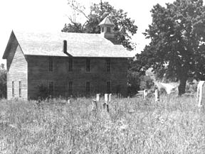

The stone Post Office at Elk Ranch, Arkansas has been stuccoed and modernized for a vacation home. Most of the wooden houses of this village and the once-thriving nearby town of Brooklyn have long since disappeared. At the turn of the century, General George Russ fenced a thousand acres here and domesticated 100 elk to demonstrate that elk meat could be produced at less cost and more profit than beef, pork or mutton. A USDA Bulletin of 1910 confirmed his findings.